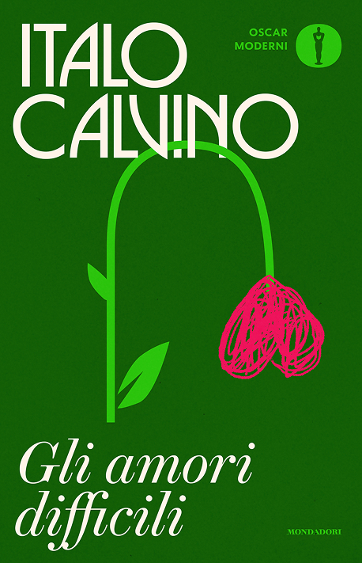
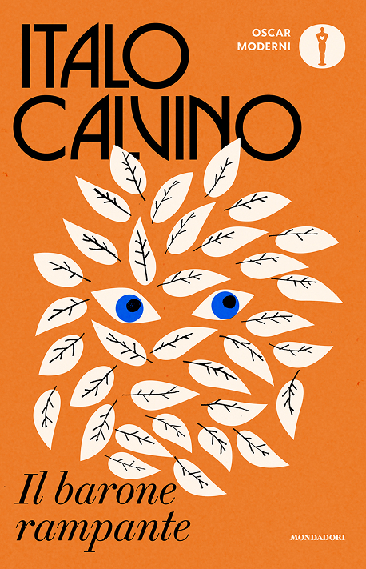
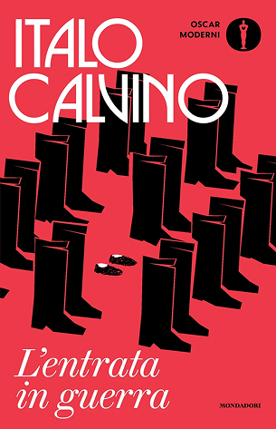
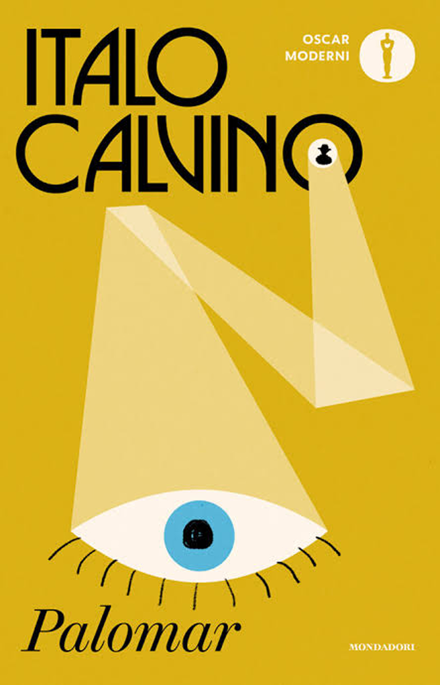
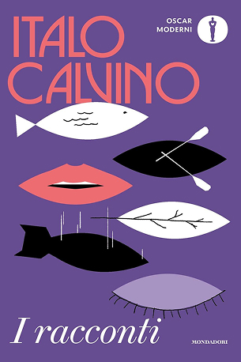
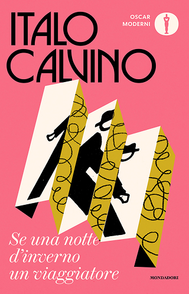

Trentatré copertino per Calvino
Per i cento anni dalla nascita. Mondadori ha ripubblicato tutti i libri di italo Calvino con una veste nuova e comune. Le ha disegnate un solo grafico, l'olandese Jack Smyth.






01. Lo Scrittore
Italo Calvino nasce nel 1923 a Cuba e muore a Siena nel 1985. Per il centenario Mondadori ripubblica tutti i suoi libri con una veste comune, diversa da quella degli altri autori: Calvino deve diventare riconoscibile sullo scaffale.
02. La Gara
Mondadori invita quattro grafici stranieri, perché chi ha letto Calvino a scuola rischia di portarsi dietro quella lettura. Vince l’irlandese Jack Smyth. Il brief chiede copertine narrative, calde, non concettuali.
03. Il Progetto
Cambiano due cose, il resto sta fermo
la struttura resta ferma
Una Collana è un sistema
Poche regole, rispettate sempre